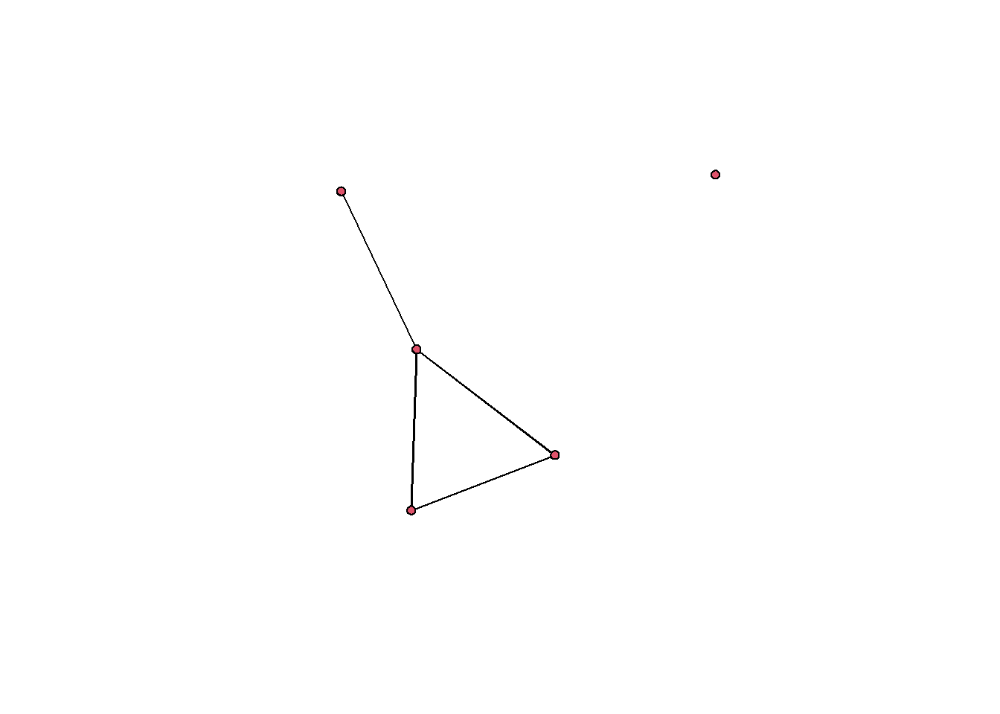
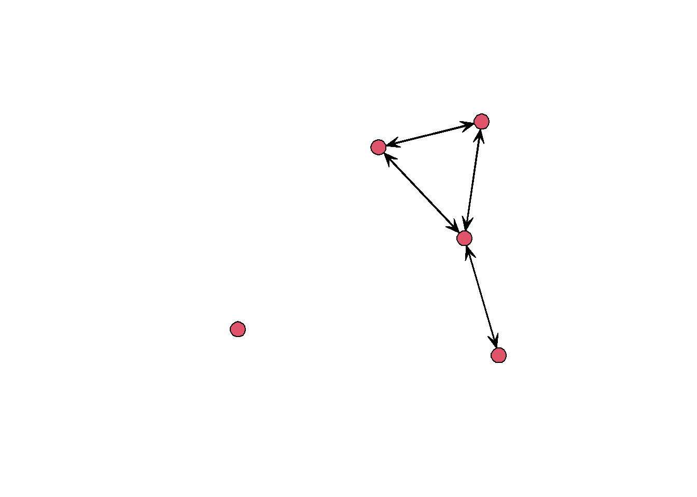
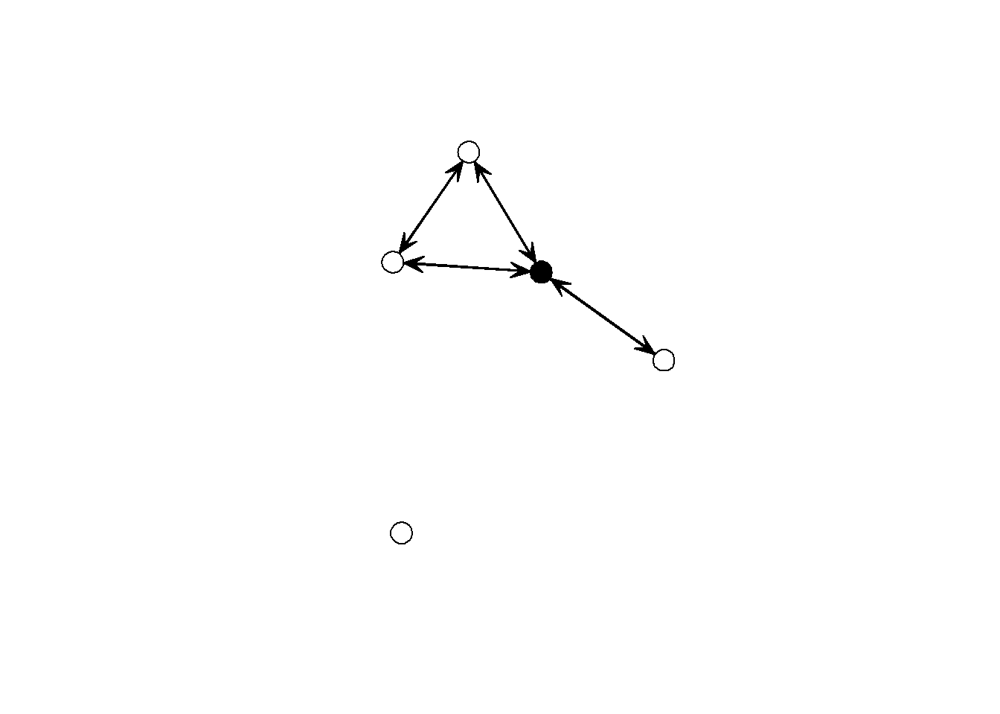

This code replicates most parts of the lecture in R. This will allow you to see how the the theoretical network concepts translate into the empirical analysis. For the following exercise we will be using the library statnet. You can install this package by typing install.packages(“statnet”) into the R Console. After that you can call the library.
library(statnet)## Loading required package: tergm## Loading required package: ergm## Loading required package: network## network: Classes for Relational Data
## Version 1.16.0 created on 2019-11-30.
## copyright (c) 2005, Carter T. Butts, University of California-Irvine
## Mark S. Handcock, University of California -- Los Angeles
## David R. Hunter, Penn State University
## Martina Morris, University of Washington
## Skye Bender-deMoll, University of Washington
## For citation information, type citation("network").
## Type help("network-package") to get started.##
## ergm: version 3.10.4, created on 2019-06-10
## Copyright (c) 2019, Mark S. Handcock, University of California -- Los Angeles
## David R. Hunter, Penn State University
## Carter T. Butts, University of California -- Irvine
## Steven M. Goodreau, University of Washington
## Pavel N. Krivitsky, University of Wollongong
## Martina Morris, University of Washington
## with contributions from
## Li Wang
## Kirk Li, University of Washington
## Skye Bender-deMoll, University of Washington
## Chad Klumb
## Based on "statnet" project software (statnet.org).
## For license and citation information see statnet.org/attribution
## or type citation("ergm").## NOTE: Versions before 3.6.1 had a bug in the implementation of the bd()
## constriant which distorted the sampled distribution somewhat. In
## addition, Sampson's Monks datasets had mislabeled vertices. See the
## NEWS and the documentation for more details.## NOTE: Some common term arguments pertaining to vertex attribute and
## level selection have changed in 3.10.0. See terms help for more
## details. Use 'options(ergm.term=list(version="3.9.4"))' to use old
## behavior.## Loading required package: networkDynamic##
## networkDynamic: version 0.10.1, created on 2020-01-16
## Copyright (c) 2020, Carter T. Butts, University of California -- Irvine
## Ayn Leslie-Cook, University of Washington
## Pavel N. Krivitsky, University of Wollongong
## Skye Bender-deMoll, University of Washington
## with contributions from
## Zack Almquist, University of California -- Irvine
## David R. Hunter, Penn State University
## Li Wang
## Kirk Li, University of Washington
## Steven M. Goodreau, University of Washington
## Jeffrey Horner
## Martina Morris, University of Washington
## Based on "statnet" project software (statnet.org).
## For license and citation information see statnet.org/attribution
## or type citation("networkDynamic").##
## tergm: version 3.6.1, created on 2019-06-12
## Copyright (c) 2019, Pavel N. Krivitsky, University of Wollongong
## Mark S. Handcock, University of California -- Los Angeles
## with contributions from
## David R. Hunter, Penn State University
## Steven M. Goodreau, University of Washington
## Martina Morris, University of Washington
## Nicole Bohme Carnegie, New York University
## Carter T. Butts, University of California -- Irvine
## Ayn Leslie-Cook, University of Washington
## Skye Bender-deMoll
## Li Wang
## Kirk Li, University of Washington
## Based on "statnet" project software (statnet.org).
## For license and citation information see statnet.org/attribution
## or type citation("tergm").## Loading required package: ergm.count##
## ergm.count: version 3.4.0, created on 2019-05-15
## Copyright (c) 2019, Pavel N. Krivitsky, University of Wollongong
## with contributions from
## Mark S. Handcock, University of California -- Los Angeles
## David R. Hunter, Penn State University
## Based on "statnet" project software (statnet.org).
## For license and citation information see statnet.org/attribution
## or type citation("ergm.count").## NOTE: The form of the term 'CMP' has been changed in version 3.2 of
## 'ergm.count'. See the news or help('CMP') for more information.## Loading required package: sna## Loading required package: statnet.common##
## Attaching package: 'statnet.common'## The following object is masked from 'package:base':
##
## order## sna: Tools for Social Network Analysis
## Version 2.5 created on 2019-12-09.
## copyright (c) 2005, Carter T. Butts, University of California-Irvine
## For citation information, type citation("sna").
## Type help(package="sna") to get started.## Loading required package: tsna##
## statnet: version 2019.6, created on 2019-06-13
## Copyright (c) 2019, Mark S. Handcock, University of California -- Los Angeles
## David R. Hunter, Penn State University
## Carter T. Butts, University of California -- Irvine
## Steven M. Goodreau, University of Washington
## Pavel N. Krivitsky, University of Wollongong
## Skye Bender-deMoll
## Martina Morris, University of Washington
## Based on "statnet" project software (statnet.org).
## For license and citation information see statnet.org/attribution
## or type citation("statnet").## unable to reach CRANRemember that a basic graph or network consists of a set of nodes/vertices and set of lines/edges. In the example provided in the lecture we thought of nodes as states and these were linked if they had a military dispute since 1990. Initially, imagine we would have states c(“A”,“B”,“C”,“D”,“E”) and with states having disputes AB, AD, BD. Let’s imagine that “A”,“B”,“C”,“D”,“E” is indexed 1,2,3,4,5.
Given that we can now create an edge list (md.list) with all the edges between states (md.nodes). With these two objects we can then create a network (md.net) with the function network() in R.
#edgelist
md.list <- rbind(c(1,2), #AB
c(1,4), #AD
c(2,4), #BD
c(1,5)) #AE
#nodes
md.nodes <- c("A","B","C","D","E")
md.net <- network(md.list,directed=FALSE)
network.vertex.names(md.net) <- md.nodes
summary(md.net)## Network attributes:
## vertices = 5
## directed = FALSE
## hyper = FALSE
## loops = FALSE
## multiple = FALSE
## bipartite = FALSE
## total edges = 4
## missing edges = 0
## non-missing edges = 4
## density = 0.4
##
## Vertex attributes:
## vertex.names:
## character valued attribute
## 5 valid vertex names
##
## No edge attributes
##
## Network adjacency matrix:
## A B C D E
## A 0 1 0 1 1
## B 1 0 0 1 0
## C 0 0 0 0 0
## D 1 1 0 0 0
## E 1 0 0 0 0At the end of the code there is the summary() function. When you do the summary of a network object, you already get some information about the network that we discussed in the lecture. E.g. the density is provided and whether or not it is bipartite. In addition to the summary() function we can now also use the plot() function for this initial network:
plot(md.net)
The final step now is to use another plotting function gplot()
gplot(md.net)
So let us now focus on some other the concepts from the lecture: Cutpoints and Bridges. Let us identify the cutpoint in our network
c.points <- cutpoints(md.net,mode="graph", return.indicator = TRUE)
c.points## 1 2 3 4 5
## TRUE FALSE FALSE FALSE FALSE#Check whether this is right by plotting c.points as vertex.col
gplot(md.net,vertex.col=c.points)